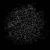
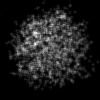
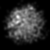

pdbInfoでみた入力ファイルの詳細
| オプション | 必須項目/選択項目 | 説明 | デフォルト |
|---|---|---|---|
| -i | 必須 | 入力ファイル設定 | NULL |
| -o | 選択 | 出力ファイル設定 | NULL |
| -nx | 選択 | 出力画像ｘ軸の幅を設定 | 1 |
| -ny | 選択 | 出力画像ｙ軸の幅を設定 | 1 |
| -nz | 選択 | 出力画像ｚ軸の幅を設定 | 1 |
| -Sx | 選択 | 入力ファイルの読み込み開始地点設定（ｘ軸） | 0.0 |
| -Sy | 選択 | 入力ファイルの読み込み開始地点設定（ｙ軸） | 0.0 |
| -Sz | 選択 | 入力ファイルの読み込み開始地点設定（ｚ軸） | 0.0 |
| -dx | 選択 | １ピクセルのｘ軸の幅を設定 | 2.5 |
| -dy | 選択 | １ピクセルのｙ軸の幅を設定 | 2.5 |
| -dz | 選択 | １ピクセルのｚ軸の幅を設定 | 2.5 |
| -w | 選択 | 重量を設定 | 1.0 |
| -sig | 選択 | 原子の半径 | 0.0 |
| -m | 選択 | モード設定 | 0 |
| -h | 選択 | ヘルプを表示 |
| モード | 説明 |
|---|---|
| 0 | ガウス球 |
| 1 | Wentzel原子模型 |
| -nx | 100 |
| -ny | 100 |
| -nz | 1 |
| -Sx | -18 |
| -Sy | -1 |
| -Sz | 0.5 |
| -dx | 0.5 |
| -dy | 0.5 |
| -dz | 60 |
|  | 最小 |
0 |
|  | 最小 |
0 |
|  | 最小 |
0 |